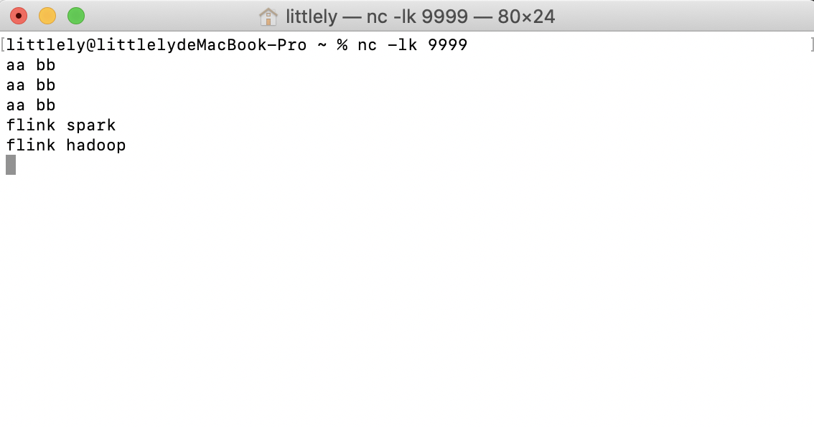
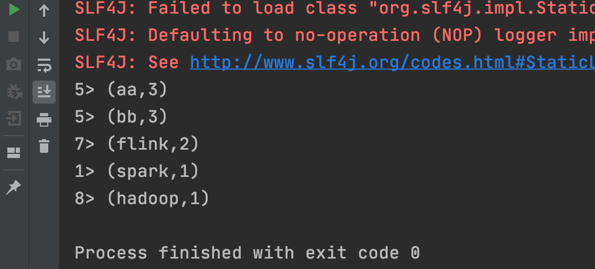

本章主要介绍DataStream的基本操作，包括数据的接入，转换以及把结果写入外部存储中，代码全部以Scala语言实现，你说为啥用Scala，因为它简洁！
2.1 一个例子
先看一个官网的例子：
package com.littlely
import org.apache.flink.streaming.api.scala._
import org.apache.flink.streaming.api.scala.StreamExecutionEnvironment
import org.apache.flink.streaming.api.windowing.time.Time
object WordCount {
def main(args: Array[String]): Unit = {
val env = StreamExecutionEnvironment.getExecutionEnvironment
val text = env.socketTextStream("localhost", 9999)
text.flatMap(_.toLowerCase.split(" ")).filter(_.nonEmpty)
.map((_, 1))
.keyBy(0)
.timeWindow(Time.seconds(5))
.sum(1)
.print()
env.execute("WordCount")
}
}
如果会spark的朋友看到上面的代码应该不会陌生，打开终端，输入nc -lk 9999，然后输入一些字符，你会看到每隔5s就会统计一次字符数量。


上面就展示了datastream处理的三块内容，既source，transform和sink。其中，env.socketTextStream("localhost", 9999)表示读取source的内容，flatMap至sum表示transform，print表示sink，打印到控制台。那么我们接下来就从这三个方面依次讲解。